原木書桌desk · 42×26work_foregroundpet_0work surface, pet perch定位資料{ "pet": { "x": 21, "y": 4 }, "petSteps": null }
奶白書桌desk_white · 42×26work_foregroundpet_0work surface, pet perch定位資料{ "pet": { "x": 21, "y": 4 }, "petSteps": null }
小木椅chair · 16×25seated_foregroundseated_foreground_frontseated_foreground_backsit定位資料{ "sit": { "x": 8, "y": 14, "pose": "sit0" }, "work": { "x": 8, "bodyY": -15, "pose": "type", "back": true } }
玫瑰坐墊椅chair_rose · 16×25seated_foregroundseated_foreground_frontseated_foreground_backsit定位資料{ "sit": { "x": 8, "y": 14, "pose": "sit0" }, "work": { "x": 8, "bodyY": -15, "pose": "type", "back": true } }
藍格子床bed · 48×35sleep_foregroundpet_0sleep, pet perch定位資料{ "sleep": { "x": 14, "y": 11, "blanketY": 18, "pose": "sleepHead" }, "pet": { "x": 27, "y": 18 }, "petSteps": null }
草莓牛奶床bed_pink · 48×35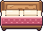sleep_foregroundpet_0sleep, pet perch定位資料{ "sleep": { "x": 14, "y": 11, "blanketY": 18, "pose": "sleepHead" }, "pet": { "x": 27, "y": 18 }, "petSteps": null }
薄荷被子床bed_mint · 48×35sleep_foregroundpet_0sleep, pet perch定位資料{ "sleep": { "x": 14, "y": 11, "blanketY": 18, "pose": "sleepHead" }, "pet": { "x": 27, "y": 18 }, "petSteps": null }
薰衣草床bed_lilac · 48×35sleep_foregroundpet_0sleep, pet perch定位資料{ "sleep": { "x": 14, "y": 11, "blanketY": 18, "pose": "sleepHead" }, "pet": { "x": 27, "y": 18 }, "petSteps": null }
藍天沙發sofa · 54×30seated_foreground_frontseated_foregroundsit定位資料{ "sit": { "x": 27, "y": 19, "pose": "sit0" } }
櫻花沙發sofa_pink · 54×30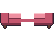seated_foreground_frontseated_foregroundsit定位資料{ "sit": { "x": 27, "y": 19, "pose": "sit0" } }
抹茶沙發sofa_mint · 54×30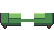seated_foreground_frontseated_foregroundsit定位資料{ "sit": { "x": 27, "y": 19, "pose": "sit0" } }
懶骨頭beanbag · 26×19seated_foreground_frontseated_foregroundpet_0sit, pet perch定位資料{ "sit": { "x": 12, "y": 12, "pose": "sit0" }, "pet": { "x": 12, "y": 8 }, "petSteps": null }
向日葵懶骨頭beanbag_sun · 26×19seated_foreground_frontseated_foregroundpet_0sit, pet perch定位資料{ "sit": { "x": 12, "y": 12, "pose": "sit0" }, "pet": { "x": 12, "y": 8 }, "petSteps": null }
貓跳台cat_tree · 26×48pet_0pet_1pet perch定位資料{ "pet": { "x": 13, "y": 9 }, "petSteps": [ { "x": 19, "y": 27 }, { "x": 13, "y": 9 } ] }
藤編蛋椅rattan_chair · 26×31seated_foreground_frontseated_foregroundpet_0sit, pet perch定位資料{ "sit": { "x": 13, "y": 17, "pose": "sit0" }, "pet": { "x": 13, "y": 17 }, "petSteps": null }
楓紅沙發sofa_maple · 54×30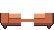seated_foreground_frontseated_foregroundsit定位資料{ "sit": { "x": 27, "y": 19, "pose": "sit0" } }
櫻花被褥futon · 50×24sleep_foregroundpet_0sleep, pet perch定位資料{ "sleep": { "x": 12, "y": 4, "blanketY": 8, "pose": "sleepHead" }, "pet": { "x": 38, "y": 12 }, "petSteps": null }
電競椅gaming_chair · 22×33seated_foregroundseated_foreground_frontseated_foreground_backsit定位資料{ "sit": { "x": 11, "y": 19, "pose": "sit0" }, "work": { "x": 11, "bodyY": -15, "pose": "type", "back": true } }
藍靠背椅ch_side_blue_oak · 16×26seated_foregroundseated_foreground_frontseated_foreground_backsit定位資料{ "sit": { "x": 8, "y": 15, "pose": "sit0" }, "work": { "x": 8, "bodyY": -15, "pose": "type", "back": true } }
藍胡桃木靠背椅ch_side_blue_walnut · 16×26seated_foregroundseated_foreground_frontseated_foreground_backsit定位資料{ "sit": { "x": 8, "y": 15, "pose": "sit0" }, "work": { "x": 8, "bodyY": -15, "pose": "type", "back": true } }
莓果靠背椅ch_side_berry_oak · 16×26seated_foregroundseated_foreground_frontseated_foreground_backsit定位資料{ "sit": { "x": 8, "y": 15, "pose": "sit0" }, "work": { "x": 8, "bodyY": -15, "pose": "type", "back": true } }
莓果胡桃木靠背椅ch_side_berry_walnut · 16×26seated_foregroundseated_foreground_frontseated_foreground_backsit定位資料{ "sit": { "x": 8, "y": 15, "pose": "sit0" }, "work": { "x": 8, "bodyY": -15, "pose": "type", "back": true } }
橄欖靠背椅ch_side_olive_oak · 16×26seated_foregroundseated_foreground_frontseated_foreground_backsit定位資料{ "sit": { "x": 8, "y": 15, "pose": "sit0" }, "work": { "x": 8, "bodyY": -15, "pose": "type", "back": true } }
橄欖胡桃木靠背椅ch_side_olive_walnut · 16×26seated_foregroundseated_foreground_frontseated_foreground_backsit定位資料{ "sit": { "x": 8, "y": 15, "pose": "sit0" }, "work": { "x": 8, "bodyY": -15, "pose": "type", "back": true } }
海軍藍靠背椅ch_side_navy_oak · 16×26seated_foregroundseated_foreground_frontseated_foreground_backsit定位資料{ "sit": { "x": 8, "y": 15, "pose": "sit0" }, "work": { "x": 8, "bodyY": -15, "pose": "type", "back": true } }
海軍藍胡桃木靠背椅ch_side_navy_walnut · 16×26seated_foregroundseated_foreground_frontseated_foreground_backsit定位資料{ "sit": { "x": 8, "y": 15, "pose": "sit0" }, "work": { "x": 8, "bodyY": -15, "pose": "type", "back": true } }
黃靠背椅ch_side_sun_oak · 16×26seated_foregroundseated_foreground_frontseated_foreground_backsit定位資料{ "sit": { "x": 8, "y": 15, "pose": "sit0" }, "work": { "x": 8, "bodyY": -15, "pose": "type", "back": true } }
黃胡桃木靠背椅ch_side_sun_walnut · 16×26seated_foregroundseated_foreground_frontseated_foreground_backsit定位資料{ "sit": { "x": 8, "y": 15, "pose": "sit0" }, "work": { "x": 8, "bodyY": -15, "pose": "type", "back": true } }
藍咖啡廳椅ch_cafe_blue_oak · 16×26seated_foregroundseated_foreground_frontseated_foreground_backsit定位資料{ "sit": { "x": 8, "y": 15, "pose": "sit0" }, "work": { "x": 8, "bodyY": -15, "pose": "type", "back": true } }
海軍藍咖啡廳椅ch_cafe_navy_oak · 16×26seated_foregroundseated_foreground_frontseated_foreground_backsit定位資料{ "sit": { "x": 8, "y": 15, "pose": "sit0" }, "work": { "x": 8, "bodyY": -15, "pose": "type", "back": true } }
粉咖啡廳椅ch_cafe_pink_oak · 16×26seated_foregroundseated_foreground_frontseated_foreground_backsit定位資料{ "sit": { "x": 8, "y": 15, "pose": "sit0" }, "work": { "x": 8, "bodyY": -15, "pose": "type", "back": true } }
珊瑚咖啡廳椅ch_cafe_coral_oak · 16×26seated_foregroundseated_foreground_frontseated_foreground_backsit定位資料{ "sit": { "x": 8, "y": 15, "pose": "sit0" }, "work": { "x": 8, "bodyY": -15, "pose": "type", "back": true } }
綠咖啡廳椅ch_cafe_green_oak · 16×26seated_foregroundseated_foreground_frontseated_foreground_backsit定位資料{ "sit": { "x": 8, "y": 15, "pose": "sit0" }, "work": { "x": 8, "bodyY": -15, "pose": "type", "back": true } }
藍造型椅ch_shell_blue_oak · 18×26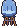seated_foregroundseated_foreground_frontseated_foreground_backsit定位資料{ "sit": { "x": 9, "y": 15, "pose": "sit0" }, "work": { "x": 9, "bodyY": -15, "pose": "type", "back": true } }
藍胡桃木造型椅ch_shell_blue_walnut · 18×26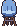seated_foregroundseated_foreground_frontseated_foreground_backsit定位資料{ "sit": { "x": 9, "y": 15, "pose": "sit0" }, "work": { "x": 9, "bodyY": -15, "pose": "type", "back": true } }
橄欖造型椅ch_shell_olive_oak · 18×26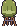seated_foregroundseated_foreground_frontseated_foreground_backsit定位資料{ "sit": { "x": 9, "y": 15, "pose": "sit0" }, "work": { "x": 9, "bodyY": -15, "pose": "type", "back": true } }
橄欖胡桃木造型椅ch_shell_olive_walnut · 18×26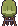seated_foregroundseated_foreground_frontseated_foreground_backsit定位資料{ "sit": { "x": 9, "y": 15, "pose": "sit0" }, "work": { "x": 9, "bodyY": -15, "pose": "type", "back": true } }
綠造型椅ch_shell_green_oak · 18×26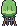seated_foregroundseated_foreground_frontseated_foreground_backsit定位資料{ "sit": { "x": 9, "y": 15, "pose": "sit0" }, "work": { "x": 9, "bodyY": -15, "pose": "type", "back": true } }
綠胡桃木造型椅ch_shell_green_walnut · 18×26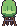seated_foregroundseated_foreground_frontseated_foreground_backsit定位資料{ "sit": { "x": 9, "y": 15, "pose": "sit0" }, "work": { "x": 9, "bodyY": -15, "pose": "type", "back": true } }
紫造型椅ch_shell_lilac_oak · 18×26seated_foregroundseated_foreground_frontseated_foreground_backsit定位資料{ "sit": { "x": 9, "y": 15, "pose": "sit0" }, "work": { "x": 9, "bodyY": -15, "pose": "type", "back": true } }
紫胡桃木造型椅ch_shell_lilac_walnut · 18×26seated_foregroundseated_foreground_frontseated_foreground_backsit定位資料{ "sit": { "x": 9, "y": 15, "pose": "sit0" }, "work": { "x": 9, "bodyY": -15, "pose": "type", "back": true } }
雪白造型椅ch_shell_snow_oak · 18×26seated_foregroundseated_foreground_frontseated_foreground_backsit定位資料{ "sit": { "x": 9, "y": 15, "pose": "sit0" }, "work": { "x": 9, "bodyY": -15, "pose": "type", "back": true } }
雪白胡桃木造型椅ch_shell_snow_walnut · 18×26seated_foregroundseated_foreground_frontseated_foreground_backsit定位資料{ "sit": { "x": 9, "y": 15, "pose": "sit0" }, "work": { "x": 9, "bodyY": -15, "pose": "type", "back": true } }
藍圓凳ch_stool_blue_oak · 14×18seated_foreground_frontseated_foregroundsit定位資料{ "sit": { "x": 7, "y": 15, "pose": "sit0" } }
藍胡桃木圓凳ch_stool_blue_walnut · 14×18seated_foreground_frontseated_foregroundsit定位資料{ "sit": { "x": 7, "y": 15, "pose": "sit0" } }
灰圓凳ch_stool_grey_oak · 14×18seated_foreground_frontseated_foregroundsit定位資料{ "sit": { "x": 7, "y": 15, "pose": "sit0" } }
灰胡桃木圓凳ch_stool_grey_walnut · 14×18seated_foreground_frontseated_foregroundsit定位資料{ "sit": { "x": 7, "y": 15, "pose": "sit0" } }
黃圓凳ch_stool_sun_oak · 14×18seated_foreground_frontseated_foregroundsit定位資料{ "sit": { "x": 7, "y": 15, "pose": "sit0" } }
黃胡桃木圓凳ch_stool_sun_walnut · 14×18seated_foreground_frontseated_foregroundsit定位資料{ "sit": { "x": 7, "y": 15, "pose": "sit0" } }
芥末圓凳ch_stool_mustard_oak · 14×18seated_foreground_frontseated_foregroundsit定位資料{ "sit": { "x": 7, "y": 15, "pose": "sit0" } }
芥末胡桃木圓凳ch_stool_mustard_walnut · 14×18seated_foreground_frontseated_foregroundsit定位資料{ "sit": { "x": 7, "y": 15, "pose": "sit0" } }
海軍藍圓凳ch_stool_navy_oak · 14×18seated_foreground_frontseated_foregroundsit定位資料{ "sit": { "x": 7, "y": 15, "pose": "sit0" } }
海軍藍胡桃木圓凳ch_stool_navy_walnut · 14×18seated_foreground_frontseated_foregroundsit定位資料{ "sit": { "x": 7, "y": 15, "pose": "sit0" } }
藍吧檯椅ch_bar_blue_oak · 14×30seated_foreground_frontseated_foregroundsit定位資料{ "sit": { "x": 7, "y": 15, "pose": "sit0" } }
莓果吧檯椅ch_bar_berry_oak · 14×30seated_foreground_frontseated_foregroundsit定位資料{ "sit": { "x": 7, "y": 15, "pose": "sit0" } }
芥末吧檯椅ch_bar_mustard_oak · 14×30seated_foreground_frontseated_foregroundsit定位資料{ "sit": { "x": 7, "y": 15, "pose": "sit0" } }
黃吧檯椅ch_bar_sun_oak · 14×30seated_foreground_frontseated_foregroundsit定位資料{ "sit": { "x": 7, "y": 15, "pose": "sit0" } }
橄欖吧檯椅ch_bar_olive_oak · 14×30seated_foreground_frontseated_foregroundsit定位資料{ "sit": { "x": 7, "y": 15, "pose": "sit0" } }
藍搖椅ch_rocking_blue_oak · 22×26seated_foreground_frontseated_foregroundsit定位資料{ "sit": { "x": 11, "y": 23, "pose": "sit0" } }
藍胡桃木搖椅ch_rocking_blue_walnut · 22×26seated_foreground_frontseated_foregroundsit定位資料{ "sit": { "x": 11, "y": 23, "pose": "sit0" } }
珊瑚搖椅ch_rocking_coral_oak · 22×26seated_foreground_frontseated_foregroundsit定位資料{ "sit": { "x": 11, "y": 23, "pose": "sit0" } }
珊瑚胡桃木搖椅ch_rocking_coral_walnut · 22×26seated_foreground_frontseated_foregroundsit定位資料{ "sit": { "x": 11, "y": 23, "pose": "sit0" } }
灰搖椅ch_rocking_grey_oak · 22×26seated_foreground_frontseated_foregroundsit定位資料{ "sit": { "x": 11, "y": 23, "pose": "sit0" } }
灰胡桃木搖椅ch_rocking_grey_walnut · 22×26seated_foreground_frontseated_foregroundsit定位資料{ "sit": { "x": 11, "y": 23, "pose": "sit0" } }
黃搖椅ch_rocking_sun_oak · 22×26seated_foreground_frontseated_foregroundsit定位資料{ "sit": { "x": 11, "y": 23, "pose": "sit0" } }
黃胡桃木搖椅ch_rocking_sun_walnut · 22×26seated_foreground_frontseated_foregroundsit定位資料{ "sit": { "x": 11, "y": 23, "pose": "sit0" } }
芥末搖椅ch_rocking_mustard_oak · 22×26seated_foreground_frontseated_foregroundsit定位資料{ "sit": { "x": 11, "y": 23, "pose": "sit0" } }
芥末胡桃木搖椅ch_rocking_mustard_walnut · 22×26seated_foreground_frontseated_foregroundsit定位資料{ "sit": { "x": 11, "y": 23, "pose": "sit0" } }
藍折疊椅ch_folding_blue_oak · 16×26seated_foreground_frontseated_foregroundsit定位資料{ "sit": { "x": 8, "y": 21, "pose": "sit0" } }
芥末折疊椅ch_folding_mustard_oak · 16×26seated_foreground_frontseated_foregroundsit定位資料{ "sit": { "x": 8, "y": 21, "pose": "sit0" } }
灰折疊椅ch_folding_grey_oak · 16×26seated_foreground_frontseated_foregroundsit定位資料{ "sit": { "x": 8, "y": 21, "pose": "sit0" } }
綠折疊椅ch_folding_green_oak · 16×26seated_foreground_frontseated_foregroundsit定位資料{ "sit": { "x": 8, "y": 21, "pose": "sit0" } }
莓果折疊椅ch_folding_berry_oak · 16×26seated_foreground_frontseated_foregroundsit定位資料{ "sit": { "x": 8, "y": 21, "pose": "sit0" } }
藍扶手沙發椅ac_club_blue · 26×24seated_foreground_frontseated_foregroundpet_0sit, pet perch定位資料{ "sit": { "x": 13, "y": 18, "pose": "sit0" }, "pet": { "x": 13, "y": 8 }, "petSteps": null }
珊瑚扶手沙發椅ac_club_coral · 26×24seated_foreground_frontseated_foregroundpet_0sit, pet perch定位資料{ "sit": { "x": 13, "y": 18, "pose": "sit0" }, "pet": { "x": 13, "y": 8 }, "petSteps": null }
紫扶手沙發椅ac_club_lilac · 26×24seated_foreground_frontseated_foregroundpet_0sit, pet perch定位資料{ "sit": { "x": 13, "y": 18, "pose": "sit0" }, "pet": { "x": 13, "y": 8 }, "petSteps": null }
雪白扶手沙發椅ac_club_snow · 26×24seated_foreground_frontseated_foregroundpet_0sit, pet perch定位資料{ "sit": { "x": 13, "y": 18, "pose": "sit0" }, "pet": { "x": 13, "y": 8 }, "petSteps": null }
粉扶手沙發椅ac_club_pink · 26×24seated_foreground_frontseated_foregroundpet_0sit, pet perch定位資料{ "sit": { "x": 13, "y": 18, "pose": "sit0" }, "pet": { "x": 13, "y": 8 }, "petSteps": null }
莓果扶手沙發椅ac_club_berry · 26×24seated_foreground_frontseated_foregroundpet_0sit, pet perch定位資料{ "sit": { "x": 13, "y": 18, "pose": "sit0" }, "pet": { "x": 13, "y": 8 }, "petSteps": null }
橄欖扶手沙發椅ac_club_olive · 26×24seated_foreground_frontseated_foregroundpet_0sit, pet perch定位資料{ "sit": { "x": 13, "y": 18, "pose": "sit0" }, "pet": { "x": 13, "y": 8 }, "petSteps": null }
藍高背椅ac_wing_blue · 24×30seated_foreground_frontseated_foregroundpet_0sit, pet perch定位資料{ "sit": { "x": 12, "y": 23, "pose": "sit0" }, "pet": { "x": 12, "y": 13 }, "petSteps": null }
雪白高背椅ac_wing_snow · 24×30seated_foreground_frontseated_foregroundpet_0sit, pet perch定位資料{ "sit": { "x": 12, "y": 23, "pose": "sit0" }, "pet": { "x": 12, "y": 13 }, "petSteps": null }
珊瑚高背椅ac_wing_coral · 24×30seated_foreground_frontseated_foregroundpet_0sit, pet perch定位資料{ "sit": { "x": 12, "y": 23, "pose": "sit0" }, "pet": { "x": 12, "y": 13 }, "petSteps": null }
粉高背椅ac_wing_pink · 24×30seated_foreground_frontseated_foregroundpet_0sit, pet perch定位資料{ "sit": { "x": 12, "y": 23, "pose": "sit0" }, "pet": { "x": 12, "y": 13 }, "petSteps": null }
紫高背椅ac_wing_lilac · 24×30seated_foreground_frontseated_foregroundpet_0sit, pet perch定位資料{ "sit": { "x": 12, "y": 23, "pose": "sit0" }, "pet": { "x": 12, "y": 13 }, "petSteps": null }
莓果高背椅ac_wing_berry · 24×30seated_foreground_frontseated_foregroundpet_0sit, pet perch定位資料{ "sit": { "x": 12, "y": 23, "pose": "sit0" }, "pet": { "x": 12, "y": 13 }, "petSteps": null }
灰高背椅ac_wing_grey · 24×30seated_foreground_frontseated_foregroundpet_0sit, pet perch定位資料{ "sit": { "x": 12, "y": 23, "pose": "sit0" }, "pet": { "x": 12, "y": 13 }, "petSteps": null }
藍圓墩ac_pouf_blue · 18×13seated_foreground_frontseated_foregroundpet_0sit, pet perch定位資料{ "sit": { "x": 9, "y": 10, "pose": "sit0" }, "pet": { "x": 9, "y": 2 }, "petSteps": null }
雪白圓墩ac_pouf_snow · 18×13seated_foreground_frontseated_foregroundpet_0sit, pet perch定位資料{ "sit": { "x": 9, "y": 10, "pose": "sit0" }, "pet": { "x": 9, "y": 2 }, "petSteps": null }
灰圓墩ac_pouf_grey · 18×13seated_foreground_frontseated_foregroundpet_0sit, pet perch定位資料{ "sit": { "x": 9, "y": 10, "pose": "sit0" }, "pet": { "x": 9, "y": 2 }, "petSteps": null }
珊瑚圓墩ac_pouf_coral · 18×13seated_foreground_frontseated_foregroundpet_0sit, pet perch定位資料{ "sit": { "x": 9, "y": 10, "pose": "sit0" }, "pet": { "x": 9, "y": 2 }, "petSteps": null }
粉圓墩ac_pouf_pink · 18×13seated_foreground_frontseated_foregroundpet_0sit, pet perch定位資料{ "sit": { "x": 9, "y": 10, "pose": "sit0" }, "pet": { "x": 9, "y": 2 }, "petSteps": null }
綠圓墩ac_pouf_green · 18×13seated_foreground_frontseated_foregroundpet_0sit, pet perch定位資料{ "sit": { "x": 9, "y": 10, "pose": "sit0" }, "pet": { "x": 9, "y": 2 }, "petSteps": null }
黃圓墩ac_pouf_sun · 18×13seated_foreground_frontseated_foregroundpet_0sit, pet perch定位資料{ "sit": { "x": 9, "y": 10, "pose": "sit0" }, "pet": { "x": 9, "y": 2 }, "petSteps": null }
藍雙人沙發sf_love_blue · 44×22seated_foreground_frontseated_foregroundpet_0sit, pet perch定位資料{ "sit": { "x": 22, "y": 19, "pose": "sit0" }, "pet": { "x": 32, "y": 9 }, "petSteps": null }
芥末雙人沙發sf_love_mustard · 44×22seated_foreground_frontseated_foregroundpet_0sit, pet perch定位資料{ "sit": { "x": 22, "y": 19, "pose": "sit0" }, "pet": { "x": 32, "y": 9 }, "petSteps": null }
珊瑚雙人沙發sf_love_coral · 44×22seated_foreground_frontseated_foregroundpet_0sit, pet perch定位資料{ "sit": { "x": 22, "y": 19, "pose": "sit0" }, "pet": { "x": 32, "y": 9 }, "petSteps": null }
綠雙人沙發sf_love_green · 44×22seated_foreground_frontseated_foregroundpet_0sit, pet perch定位資料{ "sit": { "x": 22, "y": 19, "pose": "sit0" }, "pet": { "x": 32, "y": 9 }, "petSteps": null }
黃雙人沙發sf_love_sun · 44×22seated_foreground_frontseated_foregroundpet_0sit, pet perch定位資料{ "sit": { "x": 22, "y": 19, "pose": "sit0" }, "pet": { "x": 32, "y": 9 }, "petSteps": null }
粉雙人沙發sf_love_pink · 44×22seated_foreground_frontseated_foregroundpet_0sit, pet perch定位資料{ "sit": { "x": 22, "y": 19, "pose": "sit0" }, "pet": { "x": 32, "y": 9 }, "petSteps": null }
紫雙人沙發sf_love_lilac · 44×22seated_foreground_frontseated_foregroundpet_0sit, pet perch定位資料{ "sit": { "x": 22, "y": 19, "pose": "sit0" }, "pet": { "x": 32, "y": 9 }, "petSteps": null }
藍雀斯特菲沙發sf_chester_blue · 52×22seated_foreground_frontseated_foregroundpet_0sit, pet perch定位資料{ "sit": { "x": 26, "y": 19, "pose": "sit0" }, "pet": { "x": 36, "y": 9 }, "petSteps": null }
橄欖雀斯特菲沙發sf_chester_olive · 52×22seated_foreground_frontseated_foregroundpet_0sit, pet perch定位資料{ "sit": { "x": 26, "y": 19, "pose": "sit0" }, "pet": { "x": 36, "y": 9 }, "petSteps": null }
灰雀斯特菲沙發sf_chester_grey · 52×22seated_foreground_frontseated_foregroundpet_0sit, pet perch定位資料{ "sit": { "x": 26, "y": 19, "pose": "sit0" }, "pet": { "x": 36, "y": 9 }, "petSteps": null }
芥末雀斯特菲沙發sf_chester_mustard · 52×22seated_foreground_frontseated_foregroundpet_0sit, pet perch定位資料{ "sit": { "x": 26, "y": 19, "pose": "sit0" }, "pet": { "x": 36, "y": 9 }, "petSteps": null }
黃雀斯特菲沙發sf_chester_sun · 52×22seated_foreground_frontseated_foregroundpet_0sit, pet perch定位資料{ "sit": { "x": 26, "y": 19, "pose": "sit0" }, "pet": { "x": 36, "y": 9 }, "petSteps": null }
雪白雀斯特菲沙發sf_chester_snow · 52×22seated_foreground_frontseated_foregroundpet_0sit, pet perch定位資料{ "sit": { "x": 26, "y": 19, "pose": "sit0" }, "pet": { "x": 36, "y": 9 }, "petSteps": null }
莓果雀斯特菲沙發sf_chester_berry · 52×22seated_foreground_frontseated_foregroundpet_0sit, pet perch定位資料{ "sit": { "x": 26, "y": 19, "pose": "sit0" }, "pet": { "x": 36, "y": 9 }, "petSteps": null }
原木寫字桌tb_writing_oak · 40×26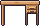work_foregroundpet_0work surface, pet perch定位資料{ "pet": { "x": 20, "y": 3 }, "petSteps": null }
胡桃木寫字桌tb_writing_walnut · 40×26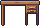work_foregroundpet_0work surface, pet perch定位資料{ "pet": { "x": 20, "y": 3 }, "petSteps": null }
白色寫字桌tb_writing_white · 40×26work_foregroundpet_0work surface, pet perch定位資料{ "pet": { "x": 20, "y": 3 }, "petSteps": null }
黑色寫字桌tb_writing_black · 40×26work_foregroundpet_0work surface, pet perch定位資料{ "pet": { "x": 20, "y": 3 }, "petSteps": null }
粉彩寫字桌tb_writing_pink · 40×26work_foregroundpet_0work surface, pet perch定位資料{ "pet": { "x": 20, "y": 3 }, "petSteps": null }
薄荷寫字桌tb_writing_mint · 40×26work_foregroundpet_0work surface, pet perch定位資料{ "pet": { "x": 20, "y": 3 }, "petSteps": null }
原木升降桌tb_standing_oak · 40×28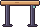work_foregroundpet_0work surface, pet perch定位資料{ "pet": { "x": 20, "y": 3 }, "petSteps": null }
白色升降桌tb_standing_white · 40×28work_foregroundpet_0work surface, pet perch定位資料{ "pet": { "x": 20, "y": 3 }, "petSteps": null }
黑色升降桌tb_standing_black · 40×28work_foregroundpet_0work surface, pet perch定位資料{ "pet": { "x": 20, "y": 3 }, "petSteps": null }
胡桃木五斗櫃st_dresser_walnut · 30×26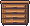pet_0pet perch定位資料{ "pet": { "x": 15, "y": 1 }, "petSteps": null }
原木高櫃st_tall_oak · 22×44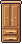pet_0pet perch定位資料{ "pet": { "x": 11, "y": 1 }, "petSteps": null }
胡桃木電視櫃st_tv_stand_walnut · 46×16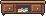pet_0pet perch定位資料{ "pet": { "x": 23, "y": 1 }, "petSteps": null }
原木餐邊櫃st_sideboard_oak · 42×22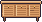pet_0pet perch定位資料{ "pet": { "x": 21, "y": 1 }, "petSteps": null }
胡桃木餐邊櫃st_sideboard_walnut · 42×22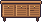pet_0pet perch定位資料{ "pet": { "x": 21, "y": 1 }, "petSteps": null }
黑色餐邊櫃st_sideboard_black · 42×22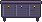pet_0pet perch定位資料{ "pet": { "x": 21, "y": 1 }, "petSteps": null }
藍單人床bd_single_blue · 50×26sleep_foregroundpet_0sleep, pet perch定位資料{ "sleep": { "x": 12, "y": 9, "blanketY": 18, "pose": "sleepHead" }, "pet": { "x": 36, "y": 8 }, "petSteps": null }
灰單人床bd_single_grey · 50×26sleep_foregroundpet_0sleep, pet perch定位資料{ "sleep": { "x": 12, "y": 9, "blanketY": 18, "pose": "sleepHead" }, "pet": { "x": 36, "y": 8 }, "petSteps": null }
黃單人床bd_single_sun · 50×26sleep_foregroundpet_0sleep, pet perch定位資料{ "sleep": { "x": 12, "y": 9, "blanketY": 18, "pose": "sleepHead" }, "pet": { "x": 36, "y": 8 }, "petSteps": null }
莓果單人床bd_single_berry · 50×26sleep_foregroundpet_0sleep, pet perch定位資料{ "sleep": { "x": 12, "y": 9, "blanketY": 18, "pose": "sleepHead" }, "pet": { "x": 36, "y": 8 }, "petSteps": null }
綠單人床bd_single_green · 50×26sleep_foregroundpet_0sleep, pet perch定位資料{ "sleep": { "x": 12, "y": 9, "blanketY": 18, "pose": "sleepHead" }, "pet": { "x": 36, "y": 8 }, "petSteps": null }
海軍藍單人床bd_single_navy · 50×26sleep_foregroundpet_0sleep, pet perch定位資料{ "sleep": { "x": 12, "y": 9, "blanketY": 18, "pose": "sleepHead" }, "pet": { "x": 36, "y": 8 }, "petSteps": null }
藍公主床bd_canopy_blue · 52×44sleep_foregroundpet_0sleep, pet perch定位資料{ "sleep": { "x": 12, "y": 27, "blanketY": 34, "pose": "sleepHead" }, "pet": { "x": 38, "y": 26 }, "petSteps": null }
橄欖公主床bd_canopy_olive · 52×44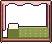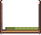sleep_foregroundpet_0sleep, pet perch定位資料{ "sleep": { "x": 12, "y": 27, "blanketY": 34, "pose": "sleepHead" }, "pet": { "x": 38, "y": 26 }, "petSteps": null }
芥末公主床bd_canopy_mustard · 52×44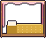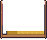sleep_foregroundpet_0sleep, pet perch定位資料{ "sleep": { "x": 12, "y": 27, "blanketY": 34, "pose": "sleepHead" }, "pet": { "x": 38, "y": 26 }, "petSteps": null }
海軍藍公主床bd_canopy_navy · 52×44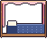sleep_foregroundpet_0sleep, pet perch定位資料{ "sleep": { "x": 12, "y": 27, "blanketY": 34, "pose": "sleepHead" }, "pet": { "x": 38, "y": 26 }, "petSteps": null }
粉公主床bd_canopy_pink · 52×44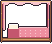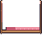sleep_foregroundpet_0sleep, pet perch定位資料{ "sleep": { "x": 12, "y": 27, "blanketY": 34, "pose": "sleepHead" }, "pet": { "x": 38, "y": 26 }, "petSteps": null }
紫公主床bd_canopy_lilac · 52×44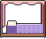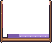sleep_foregroundpet_0sleep, pet perch定位資料{ "sleep": { "x": 12, "y": 27, "blanketY": 34, "pose": "sleepHead" }, "pet": { "x": 38, "y": 26 }, "petSteps": null }
藍雙層床bd_bunk_blue · 50×46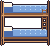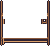sleep_foregroundpet_0sleep, pet perch定位資料{ "sleep": { "x": 12, "y": 31, "blanketY": 38, "pose": "sleepHead" }, "pet": { "x": 36, "y": 30 }, "petSteps": null }
海軍藍雙層床bd_bunk_navy · 50×46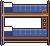sleep_foregroundpet_0sleep, pet perch定位資料{ "sleep": { "x": 12, "y": 31, "blanketY": 38, "pose": "sleepHead" }, "pet": { "x": 36, "y": 30 }, "petSteps": null }
雪白雙層床bd_bunk_snow · 50×46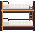sleep_foregroundpet_0sleep, pet perch定位資料{ "sleep": { "x": 12, "y": 31, "blanketY": 38, "pose": "sleepHead" }, "pet": { "x": 36, "y": 30 }, "petSteps": null }
粉雙層床bd_bunk_pink · 50×46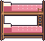sleep_foregroundpet_0sleep, pet perch定位資料{ "sleep": { "x": 12, "y": 31, "blanketY": 38, "pose": "sleepHead" }, "pet": { "x": 36, "y": 30 }, "petSteps": null }
芥末雙層床bd_bunk_mustard · 50×46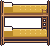sleep_foregroundpet_0sleep, pet perch定位資料{ "sleep": { "x": 12, "y": 31, "blanketY": 38, "pose": "sleepHead" }, "pet": { "x": 36, "y": 30 }, "petSteps": null }
莓果雙層床bd_bunk_berry · 50×46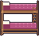sleep_foregroundpet_0sleep, pet perch定位資料{ "sleep": { "x": 12, "y": 31, "blanketY": 38, "pose": "sleepHead" }, "pet": { "x": 36, "y": 30 }, "petSteps": null }
海軍藍鑲邊圓形地毯rg_round_border_navy · 46×18pet_0pet perch定位資料{ "pet": { "x": 23, "y": 11 }, "petSteps": null }
綠鑲邊圓形地毯rg_round_border_green · 46×18pet_0pet perch定位資料{ "pet": { "x": 23, "y": 11 }, "petSteps": null }
青鑲邊圓形地毯rg_round_border_teal · 46×18pet_0pet perch定位資料{ "pet": { "x": 23, "y": 11 }, "petSteps": null }
灰條紋圓形地毯rg_round_stripe_grey · 46×18pet_0pet perch定位資料{ "pet": { "x": 23, "y": 11 }, "petSteps": null }
芥末條紋圓形地毯rg_round_stripe_mustard · 46×18pet_0pet perch定位資料{ "pet": { "x": 23, "y": 11 }, "petSteps": null }
青條紋圓形地毯rg_round_stripe_teal · 46×18pet_0pet perch定位資料{ "pet": { "x": 23, "y": 11 }, "petSteps": null }
橄欖菱紋圓形地毯rg_round_diamond_olive · 46×18pet_0pet perch定位資料{ "pet": { "x": 23, "y": 11 }, "petSteps": null }
磚紅菱紋圓形地毯rg_round_diamond_clay · 46×18pet_0pet perch定位資料{ "pet": { "x": 23, "y": 11 }, "petSteps": null }
黃菱紋圓形地毯rg_round_diamond_sun · 46×18pet_0pet perch定位資料{ "pet": { "x": 23, "y": 11 }, "petSteps": null }
芥末格紋圓形地毯rg_round_checker_mustard · 46×18pet_0pet perch定位資料{ "pet": { "x": 23, "y": 11 }, "petSteps": null }
莓果格紋圓形地毯rg_round_checker_berry · 46×18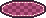pet_0pet perch定位資料{ "pet": { "x": 23, "y": 11 }, "petSteps": null }
粉格紋圓形地毯rg_round_checker_pink · 46×18pet_0pet perch定位資料{ "pet": { "x": 23, "y": 11 }, "petSteps": null }
珊瑚同心圓圓形地毯rg_round_rings_coral · 46×18pet_0pet perch定位資料{ "pet": { "x": 23, "y": 11 }, "petSteps": null }
雪白同心圓圓形地毯rg_round_rings_snow · 46×18pet_0pet perch定位資料{ "pet": { "x": 23, "y": 11 }, "petSteps": null }
青同心圓圓形地毯rg_round_rings_teal · 46×18pet_0pet perch定位資料{ "pet": { "x": 23, "y": 11 }, "petSteps": null }
橄欖鑲邊方形地毯rg_rect_border_olive · 54×18pet_0pet perch定位資料{ "pet": { "x": 27, "y": 11 }, "petSteps": null }
磚紅鑲邊方形地毯rg_rect_border_clay · 54×18pet_0pet perch定位資料{ "pet": { "x": 27, "y": 11 }, "petSteps": null }
粉鑲邊方形地毯rg_rect_border_pink · 54×18pet_0pet perch定位資料{ "pet": { "x": 27, "y": 11 }, "petSteps": null }
粉條紋方形地毯rg_rect_stripe_pink · 54×18pet_0pet perch定位資料{ "pet": { "x": 27, "y": 11 }, "petSteps": null }
莓果條紋方形地毯rg_rect_stripe_berry · 54×18pet_0pet perch定位資料{ "pet": { "x": 27, "y": 11 }, "petSteps": null }
芥末條紋方形地毯rg_rect_stripe_mustard · 54×18pet_0pet perch定位資料{ "pet": { "x": 27, "y": 11 }, "petSteps": null }
珊瑚菱紋方形地毯rg_rect_diamond_coral · 54×18pet_0pet perch定位資料{ "pet": { "x": 27, "y": 11 }, "petSteps": null }
橄欖菱紋方形地毯rg_rect_diamond_olive · 54×18pet_0pet perch定位資料{ "pet": { "x": 27, "y": 11 }, "petSteps": null }
灰菱紋方形地毯rg_rect_diamond_grey · 54×18pet_0pet perch定位資料{ "pet": { "x": 27, "y": 11 }, "petSteps": null }
珊瑚格紋方形地毯rg_rect_checker_coral · 54×18pet_0pet perch定位資料{ "pet": { "x": 27, "y": 11 }, "petSteps": null }
青格紋方形地毯rg_rect_checker_teal · 54×18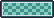pet_0pet perch定位資料{ "pet": { "x": 27, "y": 11 }, "petSteps": null }
莓果格紋方形地毯rg_rect_checker_berry · 54×18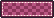pet_0pet perch定位資料{ "pet": { "x": 27, "y": 11 }, "petSteps": null }
灰流蘇方形地毯rg_rect_fringe_grey · 54×18pet_0pet perch定位資料{ "pet": { "x": 27, "y": 11 }, "petSteps": null }
紫流蘇方形地毯rg_rect_fringe_lilac · 54×18pet_0pet perch定位資料{ "pet": { "x": 27, "y": 11 }, "petSteps": null }
雪白流蘇方形地毯rg_rect_fringe_snow · 54×18pet_0pet perch定位資料{ "pet": { "x": 27, "y": 11 }, "petSteps": null }
芥末鑲邊半圓地毯rg_half_border_mustard · 40×14pet_0pet perch定位資料{ "pet": { "x": 20, "y": 9 }, "petSteps": null }
綠鑲邊半圓地毯rg_half_border_green · 40×14pet_0pet perch定位資料{ "pet": { "x": 20, "y": 9 }, "petSteps": null }
海軍藍條紋半圓地毯rg_half_stripe_navy · 40×14pet_0pet perch定位資料{ "pet": { "x": 20, "y": 9 }, "petSteps": null }
綠條紋半圓地毯rg_half_stripe_green · 40×14pet_0pet perch定位資料{ "pet": { "x": 20, "y": 9 }, "petSteps": null }
芥末條紋半圓地毯rg_half_stripe_mustard · 40×14pet_0pet perch定位資料{ "pet": { "x": 20, "y": 9 }, "petSteps": null }
莓果菱紋半圓地毯rg_half_diamond_berry · 40×14pet_0pet perch定位資料{ "pet": { "x": 20, "y": 9 }, "petSteps": null }
珊瑚菱紋半圓地毯rg_half_diamond_coral · 40×14pet_0pet perch定位資料{ "pet": { "x": 20, "y": 9 }, "petSteps": null }
磚紅格紋半圓地毯rg_half_checker_clay · 40×14pet_0pet perch定位資料{ "pet": { "x": 20, "y": 9 }, "petSteps": null }
綠格紋半圓地毯rg_half_checker_green · 40×14pet_0pet perch定位資料{ "pet": { "x": 20, "y": 9 }, "petSteps": null }
藍格紋半圓地毯rg_half_checker_blue · 40×14pet_0pet perch定位資料{ "pet": { "x": 20, "y": 9 }, "petSteps": null }
紫同心圓半圓地毯rg_half_rings_lilac · 40×14pet_0pet perch定位資料{ "pet": { "x": 20, "y": 9 }, "petSteps": null }
芥末同心圓半圓地毯rg_half_rings_mustard · 40×14pet_0pet perch定位資料{ "pet": { "x": 20, "y": 9 }, "petSteps": null }
雪白鑲邊雲朵地毯rg_cloud_border_snow · 46×18pet_0pet perch定位資料{ "pet": { "x": 23, "y": 11 }, "petSteps": null }
藍鑲邊雲朵地毯rg_cloud_border_blue · 46×18pet_0pet perch定位資料{ "pet": { "x": 23, "y": 11 }, "petSteps": null }
灰鑲邊雲朵地毯rg_cloud_border_grey · 46×18pet_0pet perch定位資料{ "pet": { "x": 23, "y": 11 }, "petSteps": null }
青條紋雲朵地毯rg_cloud_stripe_teal · 46×18pet_0pet perch定位資料{ "pet": { "x": 23, "y": 11 }, "petSteps": null }
雪白條紋雲朵地毯rg_cloud_stripe_snow · 46×18pet_0pet perch定位資料{ "pet": { "x": 23, "y": 11 }, "petSteps": null }
莓果條紋雲朵地毯rg_cloud_stripe_berry · 46×18pet_0pet perch定位資料{ "pet": { "x": 23, "y": 11 }, "petSteps": null }
芥末菱紋雲朵地毯rg_cloud_diamond_mustard · 46×18pet_0pet perch定位資料{ "pet": { "x": 23, "y": 11 }, "petSteps": null }
紫菱紋雲朵地毯rg_cloud_diamond_lilac · 46×18pet_0pet perch定位資料{ "pet": { "x": 23, "y": 11 }, "petSteps": null }
磚紅菱紋雲朵地毯rg_cloud_diamond_clay · 46×18pet_0pet perch定位資料{ "pet": { "x": 23, "y": 11 }, "petSteps": null }
芥末格紋雲朵地毯rg_cloud_checker_mustard · 46×18pet_0pet perch定位資料{ "pet": { "x": 23, "y": 11 }, "petSteps": null }
雪白格紋雲朵地毯rg_cloud_checker_snow · 46×18pet_0pet perch定位資料{ "pet": { "x": 23, "y": 11 }, "petSteps": null }
綠格紋雲朵地毯rg_cloud_checker_green · 46×18pet_0pet perch定位資料{ "pet": { "x": 23, "y": 11 }, "petSteps": null }
綠同心圓雲朵地毯rg_cloud_rings_green · 46×18pet_0pet perch定位資料{ "pet": { "x": 23, "y": 11 }, "petSteps": null }
橄欖同心圓雲朵地毯rg_cloud_rings_olive · 46×18pet_0pet perch定位資料{ "pet": { "x": 23, "y": 11 }, "petSteps": null }
青同心圓雲朵地毯rg_cloud_rings_teal · 46×18pet_0pet perch定位資料{ "pet": { "x": 23, "y": 11 }, "petSteps": null }
粉鑲邊橢圓地毯rg_oval_border_pink · 56×16pet_0pet perch定位資料{ "pet": { "x": 28, "y": 10 }, "petSteps": null }
綠鑲邊橢圓地毯rg_oval_border_green · 56×16pet_0pet perch定位資料{ "pet": { "x": 28, "y": 10 }, "petSteps": null }
莓果鑲邊橢圓地毯rg_oval_border_berry · 56×16pet_0pet perch定位資料{ "pet": { "x": 28, "y": 10 }, "petSteps": null }
橄欖條紋橢圓地毯rg_oval_stripe_olive · 56×16pet_0pet perch定位資料{ "pet": { "x": 28, "y": 10 }, "petSteps": null }
海軍藍條紋橢圓地毯rg_oval_stripe_navy · 56×16pet_0pet perch定位資料{ "pet": { "x": 28, "y": 10 }, "petSteps": null }
紫菱紋橢圓地毯rg_oval_diamond_lilac · 56×16pet_0pet perch定位資料{ "pet": { "x": 28, "y": 10 }, "petSteps": null }
磚紅菱紋橢圓地毯rg_oval_diamond_clay · 56×16pet_0pet perch定位資料{ "pet": { "x": 28, "y": 10 }, "petSteps": null }
綠菱紋橢圓地毯rg_oval_diamond_green · 56×16pet_0pet perch定位資料{ "pet": { "x": 28, "y": 10 }, "petSteps": null }
橄欖格紋橢圓地毯rg_oval_checker_olive · 56×16pet_0pet perch定位資料{ "pet": { "x": 28, "y": 10 }, "petSteps": null }
芥末格紋橢圓地毯rg_oval_checker_mustard · 56×16pet_0pet perch定位資料{ "pet": { "x": 28, "y": 10 }, "petSteps": null }
青格紋橢圓地毯rg_oval_checker_teal · 56×16pet_0pet perch定位資料{ "pet": { "x": 28, "y": 10 }, "petSteps": null }
粉同心圓橢圓地毯rg_oval_rings_pink · 56×16pet_0pet perch定位資料{ "pet": { "x": 28, "y": 10 }, "petSteps": null }
芥末同心圓橢圓地毯rg_oval_rings_mustard · 56×16pet_0pet perch定位資料{ "pet": { "x": 28, "y": 10 }, "petSteps": null }
珊瑚同心圓橢圓地毯rg_oval_rings_coral · 56×16pet_0pet perch定位資料{ "pet": { "x": 28, "y": 10 }, "petSteps": null }
大魚缸fun_aquarium · 40×34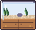pet_0pet perch定位資料{ "pet": { "x": 20, "y": 1 }, "petSteps": null }
原木書桌・胡桃木desk__walnut · 42×26work_foregroundpet_0work surface, pet perch定位資料{ "pet": { "x": 21, "y": 4 }, "petSteps": null }
原木書桌・白色desk__white · 42×26work_foregroundpet_0work surface, pet perch定位資料{ "pet": { "x": 21, "y": 4 }, "petSteps": null }
原木書桌・黑色desk__black · 42×26work_foregroundpet_0work surface, pet perch定位資料{ "pet": { "x": 21, "y": 4 }, "petSteps": null }
原木書桌・粉彩desk__pink · 42×26work_foregroundpet_0work surface, pet perch定位資料{ "pet": { "x": 21, "y": 4 }, "petSteps": null }
奶白書桌・粉desk_white__pink · 42×26work_foregroundpet_0work surface, pet perch定位資料{ "pet": { "x": 21, "y": 4 }, "petSteps": null }
奶白書桌・綠desk_white__green · 42×26work_foregroundpet_0work surface, pet perch定位資料{ "pet": { "x": 21, "y": 4 }, "petSteps": null }
奶白書桌・黃desk_white__sun · 42×26work_foregroundpet_0work surface, pet perch定位資料{ "pet": { "x": 21, "y": 4 }, "petSteps": null }
奶白書桌・海軍藍desk_white__navy · 42×26work_foregroundpet_0work surface, pet perch定位資料{ "pet": { "x": 21, "y": 4 }, "petSteps": null }
奶白書桌・芥末desk_white__mustard · 42×26work_foregroundpet_0work surface, pet perch定位資料{ "pet": { "x": 21, "y": 4 }, "petSteps": null }
小木椅・粉chair__pink · 16×25seated_foregroundseated_foreground_frontseated_foreground_backsit定位資料{ "sit": { "x": 8, "y": 14, "pose": "sit0" }, "work": { "x": 8, "bodyY": -15, "pose": "type", "back": true } }
小木椅・綠chair__green · 16×25seated_foregroundseated_foreground_frontseated_foreground_backsit定位資料{ "sit": { "x": 8, "y": 14, "pose": "sit0" }, "work": { "x": 8, "bodyY": -15, "pose": "type", "back": true } }
小木椅・黃chair__sun · 16×25seated_foregroundseated_foreground_frontseated_foreground_backsit定位資料{ "sit": { "x": 8, "y": 14, "pose": "sit0" }, "work": { "x": 8, "bodyY": -15, "pose": "type", "back": true } }
小木椅・紫chair__lilac · 16×25seated_foregroundseated_foreground_frontseated_foreground_backsit定位資料{ "sit": { "x": 8, "y": 14, "pose": "sit0" }, "work": { "x": 8, "bodyY": -15, "pose": "type", "back": true } }
小木椅・海軍藍chair__navy · 16×25seated_foregroundseated_foreground_frontseated_foreground_backsit定位資料{ "sit": { "x": 8, "y": 14, "pose": "sit0" }, "work": { "x": 8, "bodyY": -15, "pose": "type", "back": true } }
藍格子床・粉bed__pink · 48×35sleep_foregroundpet_0sleep, pet perch定位資料{ "sleep": { "x": 14, "y": 11, "blanketY": 18, "pose": "sleepHead" }, "pet": { "x": 27, "y": 18 }, "petSteps": null }
藍格子床・綠bed__green · 48×35sleep_foregroundpet_0sleep, pet perch定位資料{ "sleep": { "x": 14, "y": 11, "blanketY": 18, "pose": "sleepHead" }, "pet": { "x": 27, "y": 18 }, "petSteps": null }
藍格子床・黃bed__sun · 48×35sleep_foregroundpet_0sleep, pet perch定位資料{ "sleep": { "x": 14, "y": 11, "blanketY": 18, "pose": "sleepHead" }, "pet": { "x": 27, "y": 18 }, "petSteps": null }
藍格子床・紫bed__lilac · 48×35sleep_foregroundpet_0sleep, pet perch定位資料{ "sleep": { "x": 14, "y": 11, "blanketY": 18, "pose": "sleepHead" }, "pet": { "x": 27, "y": 18 }, "petSteps": null }
藍格子床・海軍藍bed__navy · 48×35sleep_foregroundpet_0sleep, pet perch定位資料{ "sleep": { "x": 14, "y": 11, "blanketY": 18, "pose": "sleepHead" }, "pet": { "x": 27, "y": 18 }, "petSteps": null }
雙門衣櫃・白色wardrobe__white · 36×54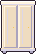pet_0pet perch定位資料{ "pet": { "x": 18, "y": 1 }, "petSteps": null }
雙門衣櫃・黑色wardrobe__black · 36×54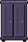pet_0pet perch定位資料{ "pet": { "x": 18, "y": 1 }, "petSteps": null }
雙門衣櫃・粉彩wardrobe__pink · 36×54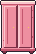pet_0pet perch定位資料{ "pet": { "x": 18, "y": 1 }, "petSteps": null }
矮櫃・胡桃木cabinet_low__walnut · 42×20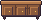pet_0pet perch定位資料{ "pet": { "x": 21, "y": 2 }, "petSteps": null }
矮櫃・白色cabinet_low__white · 42×20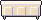pet_0pet perch定位資料{ "pet": { "x": 21, "y": 2 }, "petSteps": null }
藍天沙發・粉sofa__pink · 54×30seated_foreground_frontseated_foregroundsit定位資料{ "sit": { "x": 27, "y": 19, "pose": "sit0" } }
藍天沙發・綠sofa__green · 54×30seated_foreground_frontseated_foregroundsit定位資料{ "sit": { "x": 27, "y": 19, "pose": "sit0" } }
藍天沙發・黃sofa__sun · 54×30seated_foreground_frontseated_foregroundsit定位資料{ "sit": { "x": 27, "y": 19, "pose": "sit0" } }
藍天沙發・紫sofa__lilac · 54×30seated_foreground_frontseated_foregroundsit定位資料{ "sit": { "x": 27, "y": 19, "pose": "sit0" } }
藍天沙發・海軍藍sofa__navy · 54×30seated_foreground_frontseated_foregroundsit定位資料{ "sit": { "x": 27, "y": 19, "pose": "sit0" } }
懶骨頭・綠beanbag__green · 26×19seated_foreground_frontseated_foregroundpet_0sit, pet perch定位資料{ "sit": { "x": 12, "y": 12, "pose": "sit0" }, "pet": { "x": 12, "y": 8 }, "petSteps": null }
懶骨頭・黃beanbag__sun · 26×19seated_foreground_frontseated_foregroundpet_0sit, pet perch定位資料{ "sit": { "x": 12, "y": 12, "pose": "sit0" }, "pet": { "x": 12, "y": 8 }, "petSteps": null }
懶骨頭・紫beanbag__lilac · 26×19seated_foreground_frontseated_foregroundpet_0sit, pet perch定位資料{ "sit": { "x": 12, "y": 12, "pose": "sit0" }, "pet": { "x": 12, "y": 8 }, "petSteps": null }
懶骨頭・海軍藍beanbag__navy · 26×19seated_foreground_frontseated_foregroundpet_0sit, pet perch定位資料{ "sit": { "x": 12, "y": 12, "pose": "sit0" }, "pet": { "x": 12, "y": 8 }, "petSteps": null }
懶骨頭・芥末beanbag__mustard · 26×19seated_foreground_frontseated_foregroundpet_0sit, pet perch定位資料{ "sit": { "x": 12, "y": 12, "pose": "sit0" }, "pet": { "x": 12, "y": 8 }, "petSteps": null }
藍圓地毯・黃rug_round__sun · 58×22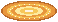pet_0pet perch定位資料{ "pet": { "x": 29, "y": 11 }, "petSteps": null }
藍圓地毯・芥末rug_round__mustard · 58×22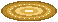pet_0pet perch定位資料{ "pet": { "x": 29, "y": 11 }, "petSteps": null }
藤編蛋椅・胡桃木rattan_chair__walnut · 26×31seated_foreground_frontseated_foregroundpet_0sit, pet perch定位資料{ "sit": { "x": 13, "y": 17, "pose": "sit0" }, "pet": { "x": 13, "y": 17 }, "petSteps": null }
藤編蛋椅・白色rattan_chair__white · 26×31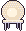seated_foreground_frontseated_foregroundpet_0sit, pet perch定位資料{ "sit": { "x": 13, "y": 17, "pose": "sit0" }, "pet": { "x": 13, "y": 17 }, "petSteps": null }
藤編蛋椅・黑色rattan_chair__black · 26×31seated_foreground_frontseated_foregroundpet_0sit, pet perch定位資料{ "sit": { "x": 13, "y": 17, "pose": "sit0" }, "pet": { "x": 13, "y": 17 }, "petSteps": null }
藤編蛋椅・粉彩rattan_chair__pink · 26×31seated_foreground_frontseated_foregroundpet_0sit, pet perch定位資料{ "sit": { "x": 13, "y": 17, "pose": "sit0" }, "pet": { "x": 13, "y": 17 }, "petSteps": null }
櫻花被褥・綠futon__green · 50×24sleep_foregroundpet_0sleep, pet perch定位資料{ "sleep": { "x": 12, "y": 4, "blanketY": 8, "pose": "sleepHead" }, "pet": { "x": 38, "y": 12 }, "petSteps": null }
櫻花被褥・黃futon__sun · 50×24sleep_foregroundpet_0sleep, pet perch定位資料{ "sleep": { "x": 12, "y": 4, "blanketY": 8, "pose": "sleepHead" }, "pet": { "x": 38, "y": 12 }, "petSteps": null }
櫻花被褥・紫futon__lilac · 50×24sleep_foregroundpet_0sleep, pet perch定位資料{ "sleep": { "x": 12, "y": 4, "blanketY": 8, "pose": "sleepHead" }, "pet": { "x": 38, "y": 12 }, "petSteps": null }
櫻花被褥・海軍藍futon__navy · 50×24sleep_foregroundpet_0sleep, pet perch定位資料{ "sleep": { "x": 12, "y": 4, "blanketY": 8, "pose": "sleepHead" }, "pet": { "x": 38, "y": 12 }, "petSteps": null }
櫻花被褥・芥末futon__mustard · 50×24sleep_foregroundpet_0sleep, pet perch定位資料{ "sleep": { "x": 12, "y": 4, "blanketY": 8, "pose": "sleepHead" }, "pet": { "x": 38, "y": 12 }, "petSteps": null }
開放式貓砂盆litter_tray · 34×18toilet_foregroundtoilet定位資料{ "toilet": { "x": 17, "y": 13, "clip": { "x": 6, "y": 4, "w": 22, "h": 14 } } }
屋型貓砂盆litter_house · 34×29toilet_foregroundtoilet定位資料{ "toilet": { "x": 17, "y": 24, "clip": { "x": 6, "y": 7, "w": 22, "h": 22 } } }
奶油膠囊砂盆litter_capsule · 34×29toilet_foregroundtoilet定位資料{ "toilet": { "x": 17, "y": 24, "clip": { "x": 6, "y": 7, "w": 22, "h": 22 } } }
燈籠團圓夜・織紋床組a92_lantern_night_bed · 48×35sleep_foregroundpet_0sleep, pet perch定位資料{ "sleep": { "x": 14, "y": 11, "blanketY": 18, "pose": "sleepHead" }, "pet": { "x": 27, "y": 18 }, "petSteps": null }
燈籠團圓夜・收納書桌a92_lantern_night_desk · 42×26work_foregroundpet_0work surface, pet perch定位資料{ "pet": { "x": 21, "y": 4 }, "petSteps": null }
燈籠團圓夜・軟墊木椅a92_lantern_night_chair · 16×25seated_foregroundseated_foreground_frontseated_foreground_backsit定位資料{ "sit": { "x": 8, "y": 14, "pose": "sit0" }, "work": { "x": 8, "bodyY": -15, "pose": "type", "back": true } }
燈籠團圓夜・織花地毯a92_lantern_night_rug_round · 58×22pet_0pet perch定位資料{ "pet": { "x": 29, "y": 11 }, "petSteps": null }
南瓜魔法屋・織紋床組a92_pumpkin_night_bed · 48×35sleep_foregroundpet_0sleep, pet perch定位資料{ "sleep": { "x": 14, "y": 11, "blanketY": 18, "pose": "sleepHead" }, "pet": { "x": 27, "y": 18 }, "petSteps": null }
南瓜魔法屋・收納書桌a92_pumpkin_night_desk · 42×26work_foregroundpet_0work surface, pet perch定位資料{ "pet": { "x": 21, "y": 4 }, "petSteps": null }
南瓜魔法屋・軟墊木椅a92_pumpkin_night_chair · 16×25seated_foregroundseated_foreground_frontseated_foreground_backsit定位資料{ "sit": { "x": 8, "y": 14, "pose": "sit0" }, "work": { "x": 8, "bodyY": -15, "pose": "type", "back": true } }
南瓜魔法屋・織花地毯a92_pumpkin_night_rug_round · 58×22pet_0pet perch定位資料{ "pet": { "x": 29, "y": 11 }, "petSteps": null }
生日驚喜屋・織紋床組a92_birthday_room_bed · 48×35sleep_foregroundpet_0sleep, pet perch定位資料{ "sleep": { "x": 14, "y": 11, "blanketY": 18, "pose": "sleepHead" }, "pet": { "x": 27, "y": 18 }, "petSteps": null }
生日驚喜屋・收納書桌a92_birthday_room_desk · 42×26work_foregroundpet_0work surface, pet perch定位資料{ "pet": { "x": 21, "y": 4 }, "petSteps": null }
生日驚喜屋・軟墊木椅a92_birthday_room_chair · 16×25seated_foregroundseated_foreground_frontseated_foreground_backsit定位資料{ "sit": { "x": 8, "y": 14, "pose": "sit0" }, "work": { "x": 8, "bodyY": -15, "pose": "type", "back": true } }
生日驚喜屋・織花地毯a92_birthday_room_rug_round · 58×22pet_0pet perch定位資料{ "pet": { "x": 29, "y": 11 }, "petSteps": null }
極光觀測室・織紋床組a92_aurora_study_bed · 48×35sleep_foregroundpet_0sleep, pet perch定位資料{ "sleep": { "x": 14, "y": 11, "blanketY": 18, "pose": "sleepHead" }, "pet": { "x": 27, "y": 18 }, "petSteps": null }
極光觀測室・收納書桌a92_aurora_study_desk · 42×26work_foregroundpet_0work surface, pet perch定位資料{ "pet": { "x": 21, "y": 4 }, "petSteps": null }
極光觀測室・軟墊木椅a92_aurora_study_chair · 16×25seated_foregroundseated_foreground_frontseated_foreground_backsit定位資料{ "sit": { "x": 8, "y": 14, "pose": "sit0" }, "work": { "x": 8, "bodyY": -15, "pose": "type", "back": true } }
極光觀測室・織花地毯a92_aurora_study_rug_round · 58×22pet_0pet perch定位資料{ "pet": { "x": 29, "y": 11 }, "petSteps": null }
陽光植感屋・織紋床組a92_greenhouse_bed · 48×35sleep_foregroundpet_0sleep, pet perch定位資料{ "sleep": { "x": 14, "y": 11, "blanketY": 18, "pose": "sleepHead" }, "pet": { "x": 27, "y": 18 }, "petSteps": null }
陽光植感屋・收納書桌a92_greenhouse_desk · 42×26work_foregroundpet_0work surface, pet perch定位資料{ "pet": { "x": 21, "y": 4 }, "petSteps": null }
陽光植感屋・軟墊木椅a92_greenhouse_chair · 16×25seated_foregroundseated_foreground_frontseated_foreground_backsit定位資料{ "sit": { "x": 8, "y": 14, "pose": "sit0" }, "work": { "x": 8, "bodyY": -15, "pose": "type", "back": true } }
陽光植感屋・織花地毯a92_greenhouse_rug_round · 58×22pet_0pet perch定位資料{ "pet": { "x": 29, "y": 11 }, "petSteps": null }
冬日星光派對・織紋床組a92_winter_party_bed · 48×35sleep_foregroundpet_0sleep, pet perch定位資料{ "sleep": { "x": 14, "y": 11, "blanketY": 18, "pose": "sleepHead" }, "pet": { "x": 27, "y": 18 }, "petSteps": null }
冬日星光派對・收納書桌a92_winter_party_desk · 42×26work_foregroundpet_0work surface, pet perch定位資料{ "pet": { "x": 21, "y": 4 }, "petSteps": null }
冬日星光派對・軟墊木椅a92_winter_party_chair · 16×25seated_foregroundseated_foreground_frontseated_foreground_backsit定位資料{ "sit": { "x": 8, "y": 14, "pose": "sit0" }, "work": { "x": 8, "bodyY": -15, "pose": "type", "back": true } }
冬日星光派對・織花地毯a92_winter_party_rug_round · 58×22pet_0pet perch定位資料{ "pet": { "x": 29, "y": 11 }, "petSteps": null }
圓弧輪胎矮凳cozy_tire_1 · 20×17seated_foreground_frontseated_foregroundsit定位資料{ "sit": { "x": 10, "y": 7, "pose": "sit0" } }
雙層輪胎矮凳cozy_tire_2 · 20×17seated_foreground_frontseated_foregroundsit定位資料{ "sit": { "x": 10, "y": 7, "pose": "sit0" } }
星形輪胎矮凳cozy_tire_3 · 20×17seated_foreground_frontseated_foregroundsit定位資料{ "sit": { "x": 10, "y": 7, "pose": "sit0" } }
格柵輪胎矮凳cozy_tire_4 · 20×17seated_foreground_frontseated_foregroundsit定位資料{ "sit": { "x": 10, "y": 7, "pose": "sit0" } }
復古輪胎矮凳cozy_tire_5 · 20×17seated_foreground_frontseated_foregroundsit定位資料{ "sit": { "x": 10, "y": 7, "pose": "sit0" } }
圓弧工作桌cozy_desk_1 · 40×25work_foregroundpet_0work surface, pet perch定位資料{ "pet": { "x": 20, "y": 4 }, "petSteps": null }
雙層工作桌cozy_desk_2 · 40×25work_foregroundpet_0work surface, pet perch定位資料{ "pet": { "x": 20, "y": 4 }, "petSteps": null }
星形工作桌cozy_desk_3 · 40×25work_foregroundpet_0work surface, pet perch定位資料{ "pet": { "x": 20, "y": 4 }, "petSteps": null }
格柵工作桌cozy_desk_4 · 40×25work_foregroundpet_0work surface, pet perch定位資料{ "pet": { "x": 20, "y": 4 }, "petSteps": null }
復古工作桌cozy_desk_5 · 40×25work_foregroundpet_0work surface, pet perch定位資料{ "pet": { "x": 20, "y": 4 }, "petSteps": null }
圓弧椅子cozy_chair_1 · 18×26seated_foreground_frontseated_foregroundseated_foreground_backsit定位資料{ "sit": { "x": 9, "y": 18, "pose": "sit0" }, "work": { "x": 9, "bodyY": -15, "pose": "type", "back": true } }
雙層椅子cozy_chair_2 · 18×26seated_foreground_frontseated_foregroundseated_foreground_backsit定位資料{ "sit": { "x": 9, "y": 18, "pose": "sit0" }, "work": { "x": 9, "bodyY": -15, "pose": "type", "back": true } }
星形椅子cozy_chair_3 · 18×26seated_foreground_frontseated_foregroundseated_foreground_backsit定位資料{ "sit": { "x": 9, "y": 18, "pose": "sit0" }, "work": { "x": 9, "bodyY": -15, "pose": "type", "back": true } }
格柵椅子cozy_chair_4 · 18×26seated_foreground_frontseated_foregroundseated_foreground_backsit定位資料{ "sit": { "x": 9, "y": 18, "pose": "sit0" }, "work": { "x": 9, "bodyY": -15, "pose": "type", "back": true } }
復古椅子cozy_chair_5 · 18×26seated_foreground_frontseated_foregroundseated_foreground_backsit定位資料{ "sit": { "x": 9, "y": 18, "pose": "sit0" }, "work": { "x": 9, "bodyY": -15, "pose": "type", "back": true } }
圓弧小沙發cozy_sofa_1 · 40×24seated_foreground_frontseated_foregroundpet_0sit, pet perch定位資料{ "sit": { "x": 20, "y": 16, "pose": "sit0" }, "pet": { "x": 20, "y": 10 }, "petSteps": null }
雙層小沙發cozy_sofa_2 · 40×24seated_foreground_frontseated_foregroundpet_0sit, pet perch定位資料{ "sit": { "x": 20, "y": 16, "pose": "sit0" }, "pet": { "x": 20, "y": 10 }, "petSteps": null }
星形小沙發cozy_sofa_3 · 40×24seated_foreground_frontseated_foregroundpet_0sit, pet perch定位資料{ "sit": { "x": 20, "y": 16, "pose": "sit0" }, "pet": { "x": 20, "y": 10 }, "petSteps": null }
格柵小沙發cozy_sofa_4 · 40×24seated_foreground_frontseated_foregroundpet_0sit, pet perch定位資料{ "sit": { "x": 20, "y": 16, "pose": "sit0" }, "pet": { "x": 20, "y": 10 }, "petSteps": null }
復古小沙發cozy_sofa_5 · 40×24seated_foreground_frontseated_foregroundpet_0sit, pet perch定位資料{ "sit": { "x": 20, "y": 16, "pose": "sit0" }, "pet": { "x": 20, "y": 10 }, "petSteps": null }
圓弧床鋪cozy_bed_1 · 32×36sleep_foregroundpet_0sleep, pet perch定位資料{ "sleep": { "x": 16, "y": 14, "blanketY": 19, "pose": "sleepHead" }, "pet": { "x": 22, "y": 25 }, "petSteps": null }
雙層床鋪cozy_bed_2 · 32×36sleep_foregroundpet_0sleep, pet perch定位資料{ "sleep": { "x": 15, "y": 16, "blanketY": 21, "pose": "sleepHead" }, "pet": { "x": 22, "y": 27 }, "petSteps": null }
星形床鋪cozy_bed_3 · 32×36sleep_foregroundpet_0sleep, pet perch定位資料{ "sleep": { "x": 16, "y": 13, "blanketY": 18, "pose": "sleepHead" }, "pet": { "x": 22, "y": 24 }, "petSteps": null }
格柵床鋪cozy_bed_4 · 32×36sleep_foregroundpet_0sleep, pet perch定位資料{ "sleep": { "x": 16, "y": 12, "blanketY": 17, "pose": "sleepHead" }, "pet": { "x": 22, "y": 23 }, "petSteps": null }
復古床鋪cozy_bed_5 · 32×36sleep_foregroundpet_0sleep, pet perch定位資料{ "sleep": { "x": 16, "y": 16, "blanketY": 21, "pose": "sleepHead" }, "pet": { "x": 22, "y": 27 }, "petSteps": null }
圓弧貓跳台cozy_tower_1 · 22×36pet_0pet_1pet_2pet perch定位資料{ "pet": { "x": 11, "y": 4 }, "petSteps": [ { "x": 12, "y": 27 }, { "x": 6, "y": 15 }, { "x": 11, "y": 4 } ] }
雙層貓跳台cozy_tower_2 · 22×36pet_0pet_1pet_2pet perch定位資料{ "pet": { "x": 11, "y": 4 }, "petSteps": [ { "x": 12, "y": 27 }, { "x": 6, "y": 15 }, { "x": 11, "y": 4 } ] }
星形貓跳台cozy_tower_3 · 22×36pet_0pet_1pet_2pet perch定位資料{ "pet": { "x": 11, "y": 4 }, "petSteps": [ { "x": 12, "y": 27 }, { "x": 6, "y": 15 }, { "x": 11, "y": 4 } ] }
格柵貓跳台cozy_tower_4 · 22×36pet_0pet_1pet_2pet perch定位資料{ "pet": { "x": 11, "y": 4 }, "petSteps": [ { "x": 12, "y": 27 }, { "x": 6, "y": 15 }, { "x": 11, "y": 4 } ] }
復古貓跳台cozy_tower_5 · 22×36pet_0pet_1pet_2pet perch定位資料{ "pet": { "x": 11, "y": 4 }, "petSteps": [ { "x": 12, "y": 27 }, { "x": 6, "y": 15 }, { "x": 11, "y": 4 } ] }
圓弧貓砂盆cozy_litter_1 · 23×20toilet_foregroundtoilet定位資料{ "toilet": { "x": 11, "y": 15, "clip": { "x": 4, "y": 5, "w": 15, "h": 15 } } }
雙層貓砂盆cozy_litter_2 · 23×20toilet_foregroundtoilet定位資料{ "toilet": { "x": 11, "y": 15, "clip": { "x": 4, "y": 5, "w": 15, "h": 15 } } }
星形貓砂盆cozy_litter_3 · 23×20toilet_foregroundtoilet定位資料{ "toilet": { "x": 11, "y": 15, "clip": { "x": 4, "y": 5, "w": 15, "h": 15 } } }
格柵貓砂盆cozy_litter_4 · 23×20toilet_foregroundtoilet定位資料{ "toilet": { "x": 11, "y": 15, "clip": { "x": 4, "y": 5, "w": 15, "h": 15 } } }
復古貓砂盆cozy_litter_5 · 23×20toilet_foregroundtoilet定位資料{ "toilet": { "x": 11, "y": 15, "clip": { "x": 4, "y": 5, "w": 15, "h": 15 } } }